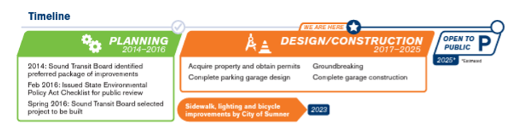
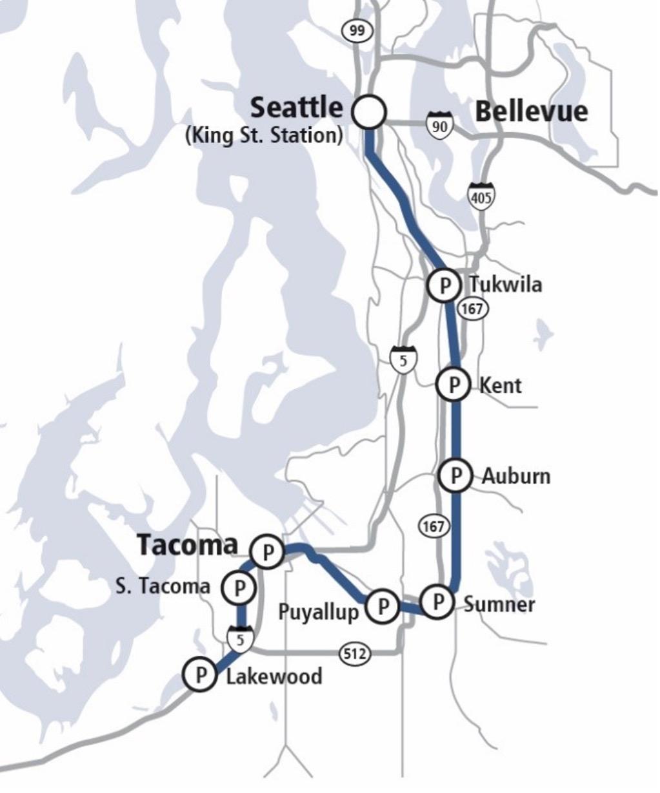

Overview
Sound Transit is building a new garage at Sumner Station, so that more people can conveniently access regional transit and enjoy traffic-free travel.
Improvements for pedestrians and bicyclists are finished, including sidewalk and lighting enhancements in the station area and a new sidewalk and multi-use path on the Traffic Avenue/ SR 410 interchange.
Construction on the garage begins later this year, and we expect it to open in early 2026. Keep scrolling to view building designs and learn what to expect during construction.
Site overview
The new parking garage, located on the site of Sumner Station’s current surface parking, will have 4.5 levels and approximately 600 stalls. The garage will border Harrison Street on the south, extending from the station platform on the west to neighboring properties on the east, spanning over Station Lane. Surface parking will be kept on Harrison St. and north of the garage. A new plaza will be added between Station Lane and Academy Street.
Vehicles will have two entrances to the garage: one from Academy St. to the north and one from Harrison St. to the south. All vehicles will exit the garage on Harrison Street.
The primary pedestrian pathway from the garage to the platform and back will be from the stair tower found at the northwest corner of the garage, which is next to the south platform.
The Sound Transit Express buses 578 and 596 will enter and exit the station via Station Lane to the south, rather than via Alder Avenue and Maple Street.

Project Renderings
In this section you will see artist renderings of the garage and pedestrian bridge designs from several angles. Note that some details could change as final design is completed.
The main vehicle entry to the garage will be from Harrison Street at the southeast corner of the site.
Station Lane and Thompson Street intersection
To accommodate buses turning into and out of Station Lane at Thompson Street, we will be widening the northwest corner of the intersection and moving the crosswalk from the southwest corner to the southeast corner of the intersection.
Bike lockers
We will be replacing the bicycle lockers at Sumner Station with new on-demand BikeLink lockers, which can be rented for $0.05 per hour. By having a more flexible locker arrangement, we expect more people can conveniently ride their bicycles to the station and store them securely. The new lockers will be located on the north end of the platform.

Walking, rolling and bicycling
Sound Transit has contributed $7.5 million to the City of Sumner to make walking, rolling and bicycling to the station and in the area easier and safer. This work, which is already complete, includes sidewalk ramps and lighting enhancements in the station area and a new sidewalk and multi-use path on the Traffic Avenue/ SR 410 interchange.

Transit and jobs
Building transit infrastructure helps support our region’s economy. This project will create about 85,000 hours of craft labor work, and we expect about 370 craft workers to be employed on the project during construction.
Designs
You shared your perspectives, and we listened
In 2017 and 2019, Sumner community members shared input on the visual design of the garage. Preferences included:
- Matching the small-town feel of Sumner and fitting in with Sumner’s Main Street.
- Not standing out or incorporating bright, bold colors.
- Incorporating brick/masonry materials, a natural color palette and pedestrian friendly details.
Read more in the vision statement.
We responded with the following design features:
- A color palette inspired by the surrounding environment.
- Incorporating brick elements and textured concrete.
- Weather-protected spaces for pedestrians.
- Decorative metal screening.
In this section, you’ll see artist renderings of the garage designs from several angles. Note that some details could change when the final design is completed.
Artwork
Paz de la Calzada will create an artwork design that will be integrated into the garage stair tower. Originally from Spain, her work is focused on nature and healing. Her design will be inspired by local native flora.

Construction
Meet the contractor
In January of 2023, the Sound Transit Board of Directors awarded Harbor Pacific Contractors of Woodinville the contract to design and build the Sumner garage. HPC's previous work includes design of the Issaquah Transit Center garage and of the Angle Lake Station garage.
Project Manager
John Welch

John has 35 years of diverse project management experience, including serving as Project Director of the WSDOT State Route 520 Montlake Design-Build project, Project Manager of the Sound Transit Angle Lake Station Garage and Project Manager on Sound Transit’s Issaquah Transit Center.
Construction Manager
Greg Schmidt

Greg has been with Harbor Pacific Contractors for the past twenty years and served as construction manager for the Angle Lake Station Garage and the Issaquah Transit Center. He has also built projects for King County, Thurston County, and numerous regional municipalities.
Design Manager
Carlos Augusto Garcia

Carlos is an internationally recognized architect with over 10 years of experience in the fields of architecture; design and construction; project, team and firm management. He has a Master of Architecture and Bachelor of Architecture from Tulane University in New Orleans. His work can be seen above highways, in neighborhoods, on desks, in print and online.
Construction Impacts
Passenger parking
+
Parking for transit riders will be significantly reduced for approximately two years, to make room for garage construction. At least 110 stalls will always be available, including the 68 stalls on the lot north of Maple Street next to the railroad tracks.
There are several other options for getting to a Sounder Station during construction:
- Walk to Sumner Station.
- Ride your bicycle to the station.
- New on-demand BikeLink lockers will be available at Sumner Station starting later this year. Lock up your bike for the day, then pick it up after your trip.
- You can also take your bike with you on the train. Learn more about taking your bike on Sounder.
- Carpool to the station. Carpools can get reserved parking – learn more and sign up here.
- Carpool parking permits are available free of charge to groups of two or more transit riders who regularly drive together to catch the train. Permits give you access to reserved parking areas when arriving with two or more transit riders in a vehicle during morning rush hour. The reserved area will be in the lot north of Maple Street.
- Drive to Puyallup Station (just 3 miles from Sumner Station) and park in the new garage or surface lot, which added 673 new stalls to the station.
- Park at Bonney Lake Park-and-Ride Lot (356 stalls) and catch ST Express 596 to Sumner Station. (Note that the 596 does not serve every train - please review the schedule.)
The parking layout at the station will look different during phases of work.
Phase 1 Construction layout
During this phase, which is expected to last up to several months, we will close most parking south of Maple Street, apart from an area at the southwest corner of the station - see map below. This southwest corner will include ADA stalls for passengers with disabilities, as well as 15-minute drop-off/pick up stalls. The 68-stall lot north of Maple Street will remain open and will include spaces reserved for carpool permit holders.
Buses will enter the station from Maple St. and exit on to Harrison St. Bus stop locations may change, and we will notify riders in advance.
Phase 2 Construction layout
In the next phase of work, expected to last up to two years, parking at the southwest corner of the site will be closed, and stalls on Narrow Street will be opened. The Narrow Street area will include ADA stalls for passengers with disabilities, as well as 15-minute drop-off/pick up stalls. The 68-stall lot north of Maple St. will remain open and will include spaces reserved for carpool permit holders.
Buses will enter from Academy Street, exit on to Maple St. Bus stop locations may change, and we will notify riders in advance of this phase of work.
Streets and sidewalks
+
Partial closures or temporary sidewalk closures could take place on nearby streets. We will preserve access to all homes and businesses. We will send notice to residents and businesses in advance.
Noise
+
Work hours are generally 6 a.m. to 4:30 p.m., Monday through Friday. Moderate noise and vibration can be expected between 7 a.m. and 4:30 p.m. If any night work is needed, that will be approved by the City and we will notify neighbors well in advance.
Truck traffic
+
Trucks hauling materials will arrive on site throughout the construction period. We will provide more information on truck routes after they are approved by the City of Sumner.
Schedule
Our Commitment
Community Outreach is a team within Sound Transit, and our mission is simple: to represent the agency in the community, and the community’s interests within Sound Transit. During construction, it’s our job to keep you informed of construction and project progress.
We’re your point of contact for Sound Transit.
As part of our good neighbor commitments, we'll:- Provide advanced notification of work.
- Maintain business and residential access.
- Maintain a clean work site.
- Minimize noise, dust and debris.
- Provide wayfinding signage.
- Maintain a 24-hour construction hotline: 1-888-298-2395.
Questions?
Contact us: Melanie.Mayock@soundtransit.org
(206) 689-4877
Sign up for alerts
Questions?
Frequently Asked Questions
Parking policies
Will I have to pay to park at the garage?
+
Under current Sound Transit policy, monthly paid parking permits are offered at facilities that hit capacity on a regular basis. If the Sumner garage fills up regularly after opening, we could start a monthly parking permit program here. Sound Transit may also consider daily paid parking options in the future.
Can locals park in the garage on weekends?
+
Sound Transit parking facilities are intended for use by transit passengers. If you will be riding a special event train on the weekend, you will be welcome to park in the garage.
Safety and security
What safety and security features are included in this
garage?
+
- Landscaping designed to ensure clear visibility of vehicles and pedestrians.
- Ample lighting in the garage interior and exterior.
- Visible stairwells and elevator shafts.
- Security cameras throughout the garage, including elevators.
- Emergency phones are on each floor, at every corner.
- Random security and police patrols 24 hours a day, 7 days a week.
Sound Transit also has a security operations center that monitors activity across our facilities 24 hours a day, 7 days a week.
Traffic and parking effects
Once the garage opens, will there be more traffic in the area?
+
All vehicles will leave the garage via Station Lane on the south end of the site, then turn right on Thompson Street.
Buses will enter and leave the station from the south on Station Lane.
Can I park on a neighborhood street near the station when I ride Sounder?
+
The City of Sumner zoned most streets near the station as "RPZ-3", which means only residents with a residential parking pass are allowed to park for more than three hours. We recommend all passengers either: park at Bonney Lake Park-and-ride lot; park at Puyallup Station; apply for an HOV parking permit; or walk or bicycle to the station.
Sounder trains
Why doesn’t Sounder run more often?
+
Sounder runs primarily on tracks owned by the BNSF Railroad, used heavily for freight movements. We do provide special event trains for select events, like some Seahawks, Sounders FC and Mariners games. See the event service schedule. In addition, the ST3 ballot measure included funds for additional trips on Sounder South, which per Board policy would be implemented by 2046. We will be updating the Sounder South Strategic Plan this year.
How do I know which track the train is arriving on?
+
Trains traveling northbound in the morning and southbound in the afternoon (peak direction) generally use the primary platform on the south side of the tracks, near the most of the parking and the bus loop. Morning southbound trains and afternoon northbound trains (reverse peak direction) generally use the platform on the north side of the tracks. A station agent is on site when trains are running and can direct passengers to the right track or notify them if there are last-minute track changes.
Will Sound Transit build a pedestrian bridge over the
tracks?
+
Construction of a pedestrian bridge over the train tracks is not part of this project, but Sound Transit may consider building a bridge in the future.
Background: Sounder South and Regional Bus Service
Sounder S Line trains offer dependable, traffic-free travel between Lakewood and Seattle. We run 13 round trips on weekdays, and it takes a little over 40 minutes to travel from Sumner to Seattle. For details, read our schedule. We also run trains for select special events like Seahawks, Sounders FC and Mariners games. Adult fares range from $3.75 to $5.75 one way, fares for seniors and low-income individuals are lower, and all youth 18 and under ride free.
Powered by clean-burning, ultra-low sulfur diesel, Sounder runs primarily on tracks owned by BNSF Railway. While Sound Transit owns the trains and stations and provides security, BNSF operates Sounder and Amtrak provides maintenance.
Sounder trains offer comfortable seats, surge-protected outlets for laptops and tablets, Wi-Fi service, storage for up to four bicycles per car, overhead storage, climate control and restrooms. Some cars have worktables.
Commuter Connector
Do you work in Sumner’s industrial area? A new shuttle service may be for you! The City of Sumner launched the Commuter Connector in early 2023 to give workers a direct connection from Sumner Station. The Connector meets Sounder trains and runs every 20 minutes, when Sounder is running. It then drops employees off at their worksite and brings them back to the station again when it is time to return home. Learn more about the Commuter Connector!
ST Express 578
This Sound Transit bus connects Sumner with Puyallup, Auburn, Federal Way, and downtown Seattle and runs when Sounder doesn't. A trip from Sumner to downtown Seattle takes a little over an hour. See the 578 schedule.
Share Your Thoughts
Thank you for visiting the online open house.
Survey Here